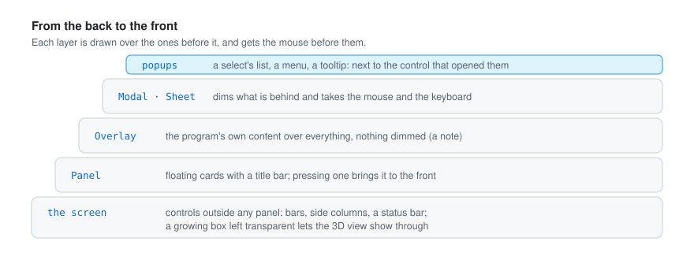
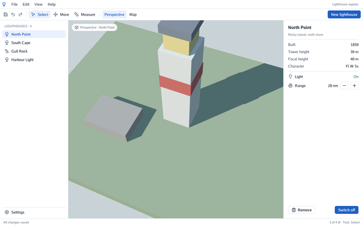
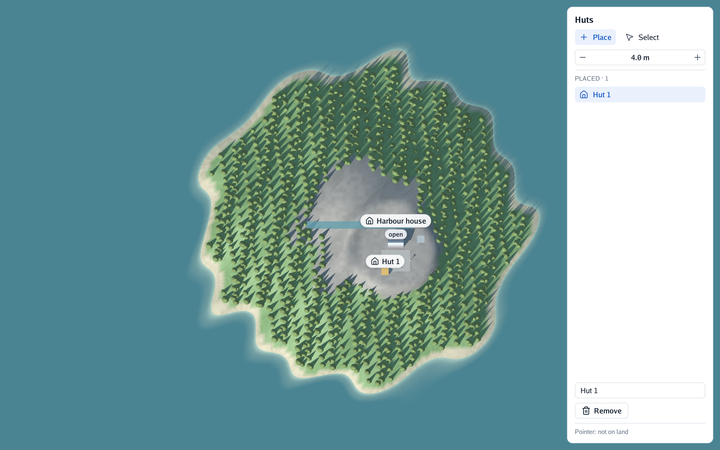
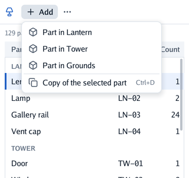
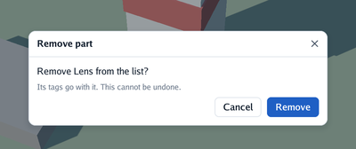

An interface is made of layers, drawn one over another. What is in front is drawn last and gets the mouse first.

| Control | What it does |
|---|---|
Panel(title, content) |
A floating card with a title bar: drag the bar to move it, the chevron folds it. Pressing a panel brings it to the front. |
PanelWith(title, PanelOptions{…}, content) |
The same, placed (X, Y), sized (Width, Height), Locked, or docked to an edge (DockLeft, DockRight, DockTop, DockBottom) |
Panels open a scope with their title, so controls with the same label in two panels stay apart (ids and scopes).
Controls added outside any panel go on the screen, a box the size of the window behind every
panel: a status bar is a Spacer() followed by a full-width Frame. The screen can hold a whole
application layout: boxes painted with a fill there (bars, side columns) take the mouse like
panels do, and a growing box left transparent lets a 3D view show through, with the camera
working inside it (cmd/scene-app).

A program that edits the scene it shows runs through go-renderer’s viewer.Edit: the
interface is built in its function, and viewer.View turns the pointer into a point on the ground.
cmd/plan-editor places huts on an island by clicking on the map (a drag still moves the map),
and a panel lists them to select, rename and remove; at rest it uses no processor or GPU.

The list of a select, a menu and a tooltip are popups: boxes that float over everything, next to the
control that opened them, under it or above it when there is no room below. Popups are drawn above
every panel and get the mouse before them. An open select also takes the keyboard (for its arrows)
until it closes. Popover makes a popup of the program’s own (controls).

context.MenuButton("plus", "Add", func() {
if context.MenuItem("box", "Hut", "") { addHut() }
context.Separator()
if context.MenuItem("copy", "Copy", "Ctrl+D") { copySelected() }
})
The menu is a popup, like a select’s list: it opens under its button, or above it when there is no room. Items are chosen with a click, or with the arrows and Enter; choosing closes it, and so do Escape and a click anywhere else. While it is open it holds the keyboard. The hint is drawn quietly on the right: the text of a shortcut, which the program handles itself.

if confirming && context.Sheet("Remove part", ui.SheetOptions{}, func() {
context.Label("Remove the lens from the list?")
if context.PrimaryButton("Remove") { removeLens(); confirming = false }
}) {
confirming = false // Escape, the × or a click on the dimmed backdrop
}
A sheet is shown with an if, as long as the program wants. It dims everything behind it and
takes the mouse and the keyboard: nothing behind reacts, a field behind loses the focus when the
sheet opens, Tab goes round the sheet’s own fields, and End claims both, so cameras and shortcuts
keep still. It returns true on the step the person asks to close it: Escape (unless a field, a
select or a menu inside it takes Escape first), the × in its title or a click on the backdrop.
SheetOptions.Width sizes the card (420 px by default). Popups (a select inside the sheet) open
over it. The dimming colour is the theme’s Scrim.
Context.Modal and Context.Overlay put a program’s own content over everything, dimming what is
behind (a dialog) or not (a note at the bottom). A modal covers the overlays, as a dialog or a
drawer covers a phone’s floating buttons: they are not touched nor read while it is open. With
LayerOptions.Leave they leave with motion once the program stops showing them, fading and moving
away (a picture of their last frame, which cannot be touched).
Context.Back answers a phone’s back gesture; modals and sheets answer it first.